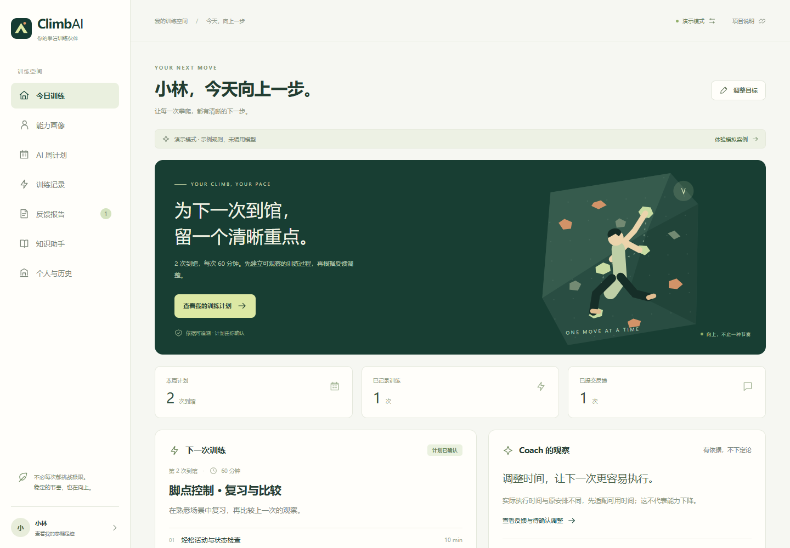

攀岩方向的早期探索
ClimbAI
先做了训练计划，后来把重点移到了记录。
这个 Web 原型尝试把建档、计划和反馈接起来。它保留在这里，用于说明攀迹之前试过什么、哪些问题还没有答案。
早期原型保留。在线演示使用本地规则；模型实验来自独立后端。

背景
最初围绕“今天练什么，练完怎么调整”设计了一周计划、知识检索和反馈流程。面向初阶攀岩者的需求是产品假设，没有通过访谈确认，也没有专业教练逐条审核训练内容。
动作
原型支持建档、计划确认、记录训练、补充反馈和调整版本。训练结束与反馈分开保存，不要求用户当场写完复盘。
后端的一次合成任务设置为每次最多 45 分钟，模型生成 35 分钟和 30 分钟的安排；记录只练了 25 分钟、临时加班后，下一次计划从 30 分钟改成 25 分钟，再由用户确认。
这轮 9 项流程检查只达到 8 项。一道复合知识问题检索到了记录字段资料，却没有完整覆盖“怎样调整下次安排”。模型说明资料不足，并不意味着用户的任务已经完成。
关键决策
计划可以保持不变
反馈后先展示修改依据，用户可以接受，也可以保留原计划。这样不会为了显示“有调整”而自动改计划，但是否能帮助用户做出更好的选择，还没有真实使用验证。
把演示和模型实验分开
公开演示用浏览器规则和本地数据，降低体验门槛；真实模型调用需要单独运行后端。两种环境的输出不能互相代替，网页里的演示也不是实时模型效果。
后续先解决记录与回看
做攀迹时把重心放到了现场记录、同一线路的历史和视频回看。这个选择缩小了问题范围，但不能据此断言训练规划没有价值。两个项目代码和存储独立，攀迹没有继承这套知识库或规划流程。
局限
知识库只有 30 条示例资料，复合问题覆盖不足。没有专业教练审核、持续试用、留存或训练改善结果，生成出的安排也不能被当作已验证有效的训练方案。
目前保留演示、源码和运行记录，以复现和兼容性维护为主。作品集中以攀迹为主项目，ClimbAI 不再作为另一个独立成熟产品并列展示。